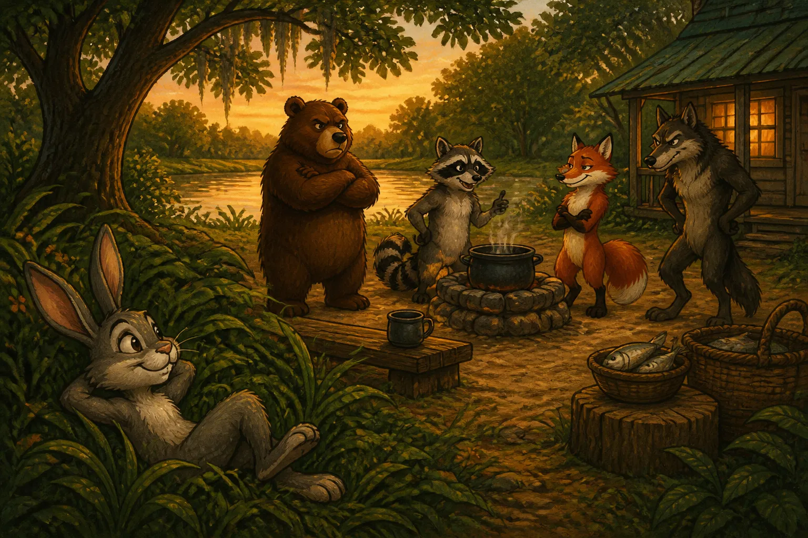
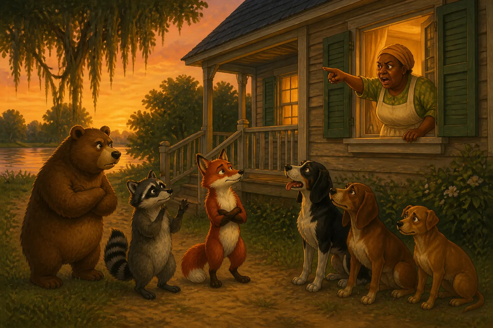

BRER RABBIT'S FROLIC
The little boy, when he next saw Uncle Remus, after hearing how the animals went to the barbecue, wanted to know what happened to them: he was anxious to learn if any of them were hurt by the dogs that had been chasing Brother Rabbit. The old darkey closed his eyes and chuckled.
"You sho is axin' sump'n now, honey. Und' his hat, ef he had any, Brer Rabbit had a mighty quick thinkin' apple-ratus, an' mos' inginner'lly, all de time, de pranks he played on de yuther creeturs pestered um bofe ways a-comin' an' a-gwine. De dogs done mighty well, 'long ez dey had dealin's wid de small fry, like Brer Fox, an' Brer Coon, an' Brer Wolf, but when dey run ag'in' ol' Brer B'ar, dey sho struck a snag. De mos' servigrous wuz de identual one dat got de wust hurted. He got too close ter Brer B'ar, an' when he look at hisse'f in runnin' water, he tuck notice dat he wuz split wide open fum flank ter dewlap.
"Atter de rucus wuz over, de creeturs hobbled off home de best dey could, an' laid 'roun' in sun an' shade fer ter let der cuts an' gashes git good an' well. When dey got so dey could segashuate, an' pay der party calls, dey 'gree fer ter insemble some'rs, an' hit on some plan fer ter outdo Brer Rabbit. Well, dey had der insembly, an' dey jower'd an' jower'd des like yo' pa do when he aint feelin' right well; but, bimeby, dey 'greed 'pon a plan dat look like it mought work. Dey 'gree fer ter make out dat dey gwine ter have a dance. Dey know'd dat ol' Brer Rabbit wuz allers keen fer dat, an' dey say dey'll gi' him a invite, an' when he got dar, dey'd ax 'im fer ter play de fiddle, an' ef he 'fuse, dey'll close in on 'im an' make way wid 'im.
"So fur, so good! But all de time dey wuz jowerin' an' confabbin', ol' Brer Rabbit wus settin' in a shady place in de grass, a-hearin' eve'y word dey say. When de time come, he crope out, he did, an' run 'roun', an' de fust news dey know'd, here he come down de big road--bookity-bookity--same ez a hoss dat's broke thoo de pastur' fence. He say, sezee, 'Why, hello, frien's! an' howdy, too, kaze I aint seed you-all sence de last time!
Whar de name er goodness is you been deze odd-come-shorts? an' how did you far' at de bobbycue? Ef my two eyeballs aint gone an' got crooked, dar's ol' Brer B'ar, him er de short tail an' sharp tush--de ve'y one I'm a-huntin' fer! An' dar's Brer Coon! I sho is in big luck. Dar's gwineter be a big frolic at Miss Meadows', an' her an' de gals want Brer B'ar fer ter show um de roas'n'-y'ar shuffle; an' dey put Brer Coon down fer de jig dey calls rack-back-Davy.
"'I'm ter play de fiddle--sump'n I aint done sence my oldest gal had de mumps an' de measles, bofe de same day an' hour! Well, dis mornin' I tuck down de fiddle fum whar she wuz a-hangin' at, an' draw'd de bow backerds an' forerds a time er two, an' den I shot my eyes an' hit some er de ol'-time chunes, an' when I come ter myse'f, dar wuz my whole blessed fambly skippin' an' sasshayin' 'roun' de room, spite er de fack dat brekkus wuz ter be cooked!'
"Wid dat, Brer Rabbit bow'd, he did, an' went back down de road like de dogs wuz atter 'im."
"But what happened then?" the little boy asked. "Nothin' 't all," replied Uncle Remus, taking up the chuckle where he had left off. "De creeturs aint had no dance, an' when dey went ter Miss Meadows', she put her head out de winder, an' say ef dey don't go off fum dar she'll have de law on um!"
